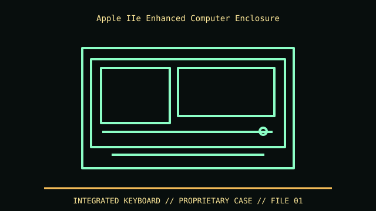

[ IDENTIFIED ENCLOSURE // APPLE IIE ENHANCED (A2S2064, 1985) ]
Apple IIe Enhanced Computer Enclosure
The Apple IIe desk unit is a keyboard-integrated low-profile enclosure; Apple IIe references describe board and case layout, but usable desk footprint should be measured from the exact case and keyboard feet.

VARIANT / ARCHIVAL CAVEAT: Enhanced IIe ROM/character-generator changes do not make the Platinum IIe or IIc mechanically identical. Verify A2S2064 label, keyboard switch type, board revision and any aftermarket accelerator. Preserve keyboard cable and fragile plastic screw posts.
Mechanical specifications and fit
| Catalog identity | Apple IIe Enhanced (A2S2064, 1985) |
|---|---|
| Dimensions and clearances | The Apple IIe desk unit is a keyboard-integrated low-profile enclosure; Apple IIe references describe board and case layout, but usable desk footprint should be measured from the exact case and keyboard feet. |
| Drive bays / mounts | One internal board cavity; no factory internal mass-storage bay. Disk II and UniDisk drives are external peripherals. |
| Board, system and compatibility | Proprietary Apple IIe board and keyboard matrix; no PC motherboard standoffs or standardized PSU bay. Seven IIe card slots are on the logic board and must remain accessible through the rear openings. |
| Revision / identification | Enhanced IIe ROM/character-generator changes do not make the Platinum IIe or IIc mechanically identical. Verify A2S2064 label, keyboard switch type, board revision and any aftermarket accelerator. Preserve keyboard cable and fragile plastic screw posts. |
Preservation and installation notes
Enhanced IIe ROM/character-generator changes do not make the Platinum IIe or IIc mechanically identical. Verify A2S2064 label, keyboard switch type, board revision and any aftermarket accelerator. Preserve keyboard cable and fragile plastic screw posts.
Proprietary Apple IIe board and keyboard matrix; no PC motherboard standoffs or standardized PSU bay. Seven IIe card slots are on the logic board and must remain accessible through the rear openings.
- Capture the complete model/SKU, serial/date label, board assembly and bay/backplane/riser identifiers before disassembly; keep matched screws, trays, carriers, feet and cables with the case.
- Check the cited manual's specific build option before transferring hardware. Published maximum GPU, drive, fan or radiator capacity may not be simultaneous when a removable cage or alternative riser occupies that volume.
- For rack and vintage systems, preserve the exact rails, shields, doors, brackets and model-specific safety instructions; do not infer compatibility from a familiar brand or physical connector shape.
Manufacturer manuals and archival sources
- Apple IIe Technical Reference Manual — Apple archival scanPrimary manufacturer or model-specific technical/manual reference used for the identification and mechanical data above.
- Apple IIe Reference Manual — Internet ArchiveSecond product manual, manufacturer resource or established technical archive; choose the exact regional SKU and revision.
When exact dimensions depend on configuration, the text says so; verify the measured specimen before making a fit or restoration decision.